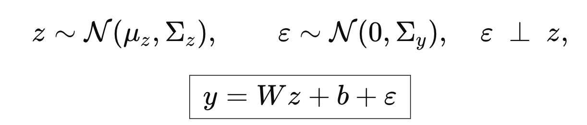
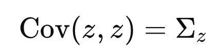
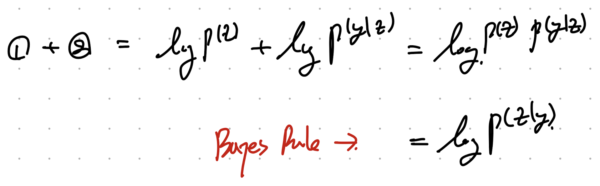
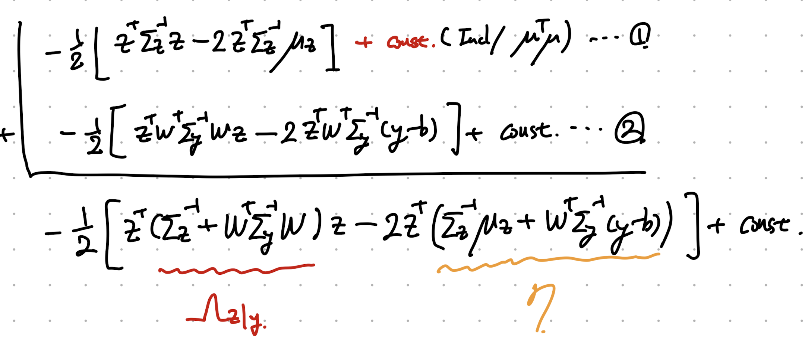
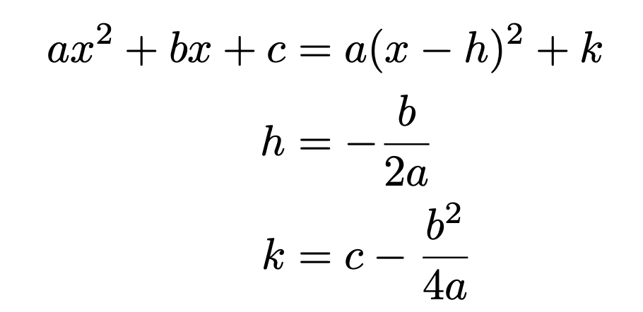
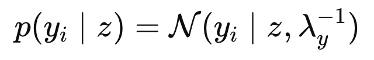
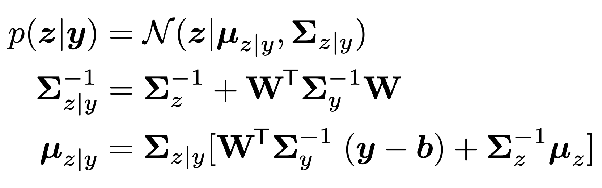

ch3 probability - part2, Linear Gaussian systems
(시작하자마자 상황극을 해보자)
우리가 공장에서 센서로
측정한 결과값(y)
으로,
제품의 완성도(z)
를 예측하는 모델을 계발한다고 가정하자.
여기서 측정하는 값과 완성도는
Linear relationship
이라고 가정하자.
(즉 ,센서 측정값이 크면, 완성도가 높은 관계)
하지만, 통신의 시간차, 센서의 진동 등등으로
측정값에는 오차가 분명히 존재한다
여기서,
Error: e
라고 정의하자.
자 우리가 지금 두변수 z, e 확률분포를 안다고 가정하자.

- z의 가우시안 분포,
- y 는 z 에 선형적으로 의존 + 잡음
(which follows Gaussian distribution)
((y = Wz + b + e), e is a perturbation)
여기서 noise, e is orthogonal to z 라는 말이 이해가 안가지만,
다시 표현하면 covariance = 0 이라는 뜻이다.
서로 연관이 없는 변수라는 것
(Independent)

(즉 잡음의 증가와 감소가 우리의 선형시스템의
결과에 영향을 미치지 않는다고 가정하는 것이다)
위 분포를 나타내면, 아래와 같다.

우리가 위 두 정보를 가지고, p(y,z)를 구해보자.
먼저 평균은 다음과 같다. (E(e) = 0)

이제 covariance Matrix만 구하면 된다.
Matrix안의 요소를 각각 구해버리자.



따라서, 최종 covariance Matrix는 다음과 같다.

지금까지 우리는 p(z,y)의 Mean vector and Covariance Matrix를 유도하였다.
이제
P(z|y)를
구해보자. (왜 구하는지는 이후에 설명)

두 식을 더하면, 우리는 bayes rule을 활용하여
p(z|y)
를 구할 수 있다.


bayes rule
생각보다 그렇게 지저분하지는 않다. 더해주자.

더해서 새로운 gaussian 정규분포 Form으로 전환하여, 평균과 분산을 구하는게 목표이다.

두번째 식이 가우시안 분포의 likelihood term이고 이를 만족하려면 평균은 아래와 같아야 함을 알 수 있다.

따라서, 기호로 표현하면 아래와 같이 평균과 분산으로 나타낼 수 있다.

====================================================================
우리가 무엇을 구하고자 하는 지를 정확히 정의하고 가자.
예시로 다음과 같이 데이터 y와 예측하고 싶은 z를 정의하자.
y= 환자의 검사 결과, z: 환자 질병상태 (암 yes or no).
Prior p(z):
우리가
관찰하기 전에
latent 변수
z
에 대해 가지고 있는 믿음(사전 지식).
(보통 인간이 암이 일어날 확률)
Likelihood p(y∣z):
주어진
z
에서 실제 관측
y
가 얼마나 그럴듯한지 (실험 데이터로부터 얻는 정보).
(암인 환자와 아닌 환자를 비교했을때 환자의 검사결과)
Posterior p(z∣y)
(우리가 알고싶은 데이터, 환자 검사결과를 기준으로 암 확률)
즉 우리는
z,y관계는 Gaussian Linear system라는 가정에서 출발하여
p(z|y)를 구하는 것이 최종목적
(따라서 위에서 유도함)
== == == == == == == == == == == == == == == == == == == == == == == == == == ==
이차방정식을 완전제곱꼴로 묶어주면 다음과 같다.

이제 우리는 Matrix equation 을 함유하는 vector function을 나타내면 다음과 같다.

같은 원리로, 위와같이 완전제곱꼴로 묶어주면 다음과 같이 나타낼 수 있다.

(꼭 기억해두자!!! 추후에 계속해서 쓰임)
자 이제 실제로 위에서 증명한 식들이 어떻게 쓰이는지를 적용해보자.
Example1: Infering an unknwon scalar
Infer an
unknown scalar value z
. We have
N
noisy measurements
y i
.
Each measurement is assumed to follow a
Gaussian likelihood
:

우리에게 주어진 likelihood
그리고 Prior has
Gaussian distribution 가정하자.

우리에게 주어진 Prior
우리가 배운 위 bayes rule을 통해서 Posterior distribution is Gaussian임을 우리는 알고 있다.

우리가 위에서 배운, y = Wz + b 에서
(W를 그냥 1벡터라고 아래처럼 가정)

위에서 증명한 식에 그대로 대입하면,

Posterior mean and covariance that we derived previously
다음의 mena and precision 값이 나오게 된다(scalar)

Example2: Infering an unknwon vector
이번에는 벡터 z를 추론하는 경우 posteir mean and covariance를 구해보자.
여기서 햇갈리면 안되는게 벡터 z를
( D x 1 ) 차수라고 하자.
예를들어

이렇게 한 환자당 3개의 데이터를 측정했다면 D = 3이고 yn안에 3개의 정보가 저장되어있는 것.
여기서 N은 그러한 환자가 몇명이냐는 것이다.
즉 데이터의 숫자를 의미한다.
위 개념을 가지고 들어가보자.
먼저 prior distribution is Gaussian이라는 가정으로 시작한다.

prior of vector z
그리고
N
independent noisy measurements
(
y = wz + b + e = z + e)
여기서 우리는 측정한 N개의 데이터 모두 각각
독립적으로
Gaussian distribution
을 따른다고 가정하자.

W = 1, b = 0 인 경우
여기서 우리가 구하고싶은
Likelihood
는

"만약 진짜 값이
z
라면, 현재 우리가 관측한 전체 데이터셋
D={y1,…,yN}
이 나올 확률"
을 의미한다.
따라서, P(D|z)
는 전체 N개의 데이터 pdf각각의 곱과 같다 .

Likelihood for all measured data.
여기서 log함수를 취해주자. (곱셉 -> 덧셈)

한 데이터에서 N개의 y의 평균을 해주면,

이제 위 y bar를 적용하면 우리는 normal distribution form으로 전환이 가능하다.

따라서, 전체 data의 likelihood는 아래와 같이 나타낼 수 있다.